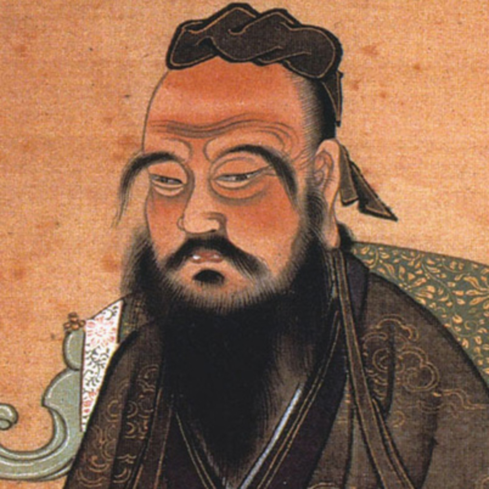

Source: Biography.comFilial piety. Ancestor veneration. Family loyalty. Self-righteousness. Sincerity. Cultivation of knowledge. Do not to unto others what you do now want dont to yourself. Teachings such as these have made up the backbone of East Asian culture. It is not an overstatement to say one person shaped the cultures of entire nations for millenia.
While Confucius has been rebuked by the Chinese Communist Party for being the reason behind the Qing Dynasty's ethnocentralism and thus their downfall, neo-Confucianism continues to dominate South Korean and Japanese culture. Confucian work ethic has been credited for the economic dominance of East Asia. For hundreds, most likely thousands of years, China bore the title of the world's largest economy until the 1870s, when it was surpassed by the United States. 160 years later, after hundreds of millions of deaths due to war and famine, China is expected to retake that title. In the 1960s, in the wake of the devastating Korean War South Korea's economy was comparable to that of Ghana's. Now, with their technological and cultural innovations, they boast the 12th largest GDP in the world, while Ghana holds 71st place. Japan, despite the damage and destruction of the Second World War, has always been able to compete with the West economically.
Yet to be mentioned are the Rising Tiger nations of Hong Kong, Singapore, and Taiwan, whose quality of life, economies, and education systems rival Western powerhouses such as the United States and Germany.